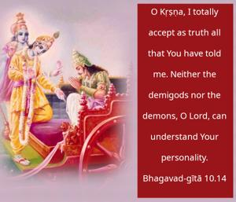
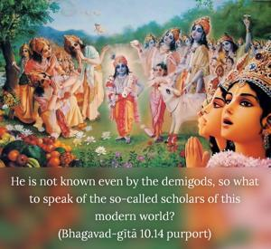

O Kṛṣṇa, I totally accept as truth all that You have told me. Neither the demigods nor the demons, O Lord, can understand Your personality.


Arjuna herein confirms that persons of faithless and demonic nature cannot understand Kṛṣṇa. He is not known even by the demigods, so what to speak of the so-called scholars of this modern world? By the grace of the Supreme Lord, Arjuna has understood that the Supreme Truth is Kṛṣṇa and that He is the perfect one. One should therefore follow the path of Arjuna. He received the authority of Bhagavad-gītā. As described in the Fourth Chapter, the paramparā system of disciplic succession for the understanding of Bhagavad-gītā was lost, and therefore Kṛṣṇa reestablished that disciplic succession with Arjuna because He considered Arjuna His intimate friend and a great devotee. Therefore, as stated in our Introduction to Gītopaniṣad, Bhagavad-gītā should be understood in the paramparā system. When the paramparā system was lost, Arjuna was selected to rejuvenate it. The acceptance by Arjuna of all that Kṛṣṇa says should be emulated; then we can understand the essence of Bhagavad-gītā, and then only can we understand that Kṛṣṇa is the Supreme Personality of Godhead.